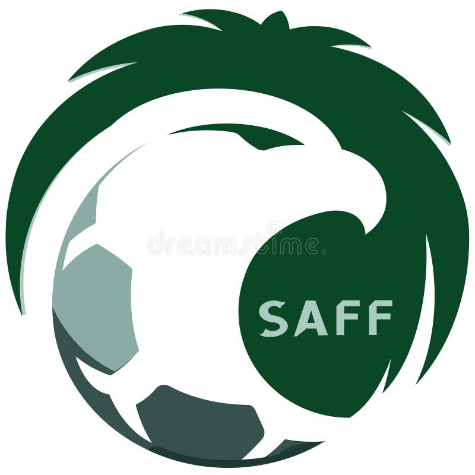
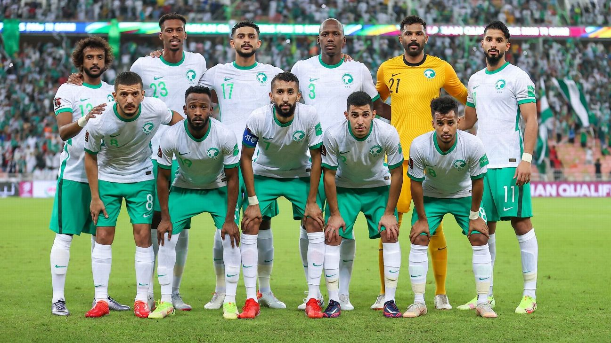
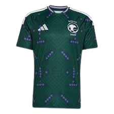
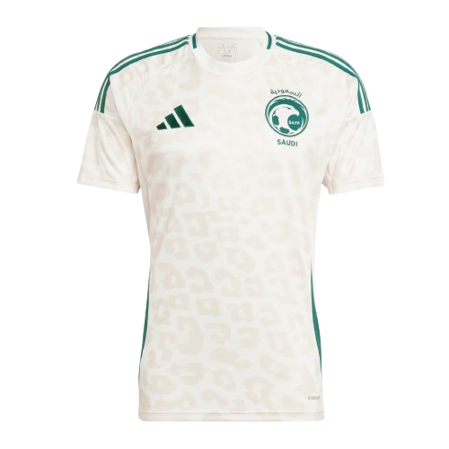

Selección
Arabia Saudita
Resumen
Arabia Saudita es una selección histórica de Asia que ha participado varias veces en la Copa del Mundo y destaca por su tradicional uniforme verde.

- Apodo: Las Águilas Verdes
- Primer Mundial: 1994
- Colores: verde y blanco
- Mejor logro: octavos de final en 1994
Historia
Arabia Saudita es un país ubicado en la península arábiga, conocido por su rica historia y su papel como uno de los principales productores de petróleo. La selección de fútbol ha participado en varias ediciones de la Copa del Mundo y se reconoce por su juego dinámico.

Jugadores
Algunos de los jugadores más importantes de la selección de Arabia Saudita son:
- Mohammed Al-Owais (portero)
- Yasser Al-Shahrani (defensa)
- Ali Al-Bulayhi (defensa)
- Salman Al-Faraj (mediocampista)
- Salem Al-Dawsari (extremo)
- Firas Al-Buraikan (delantero)
Indumentaria
La indumentaria de Arabia Saudita se reconoce por su color verde y detalles blancos. El uniforme local refleja la bandera y la identidad cultural del país.

